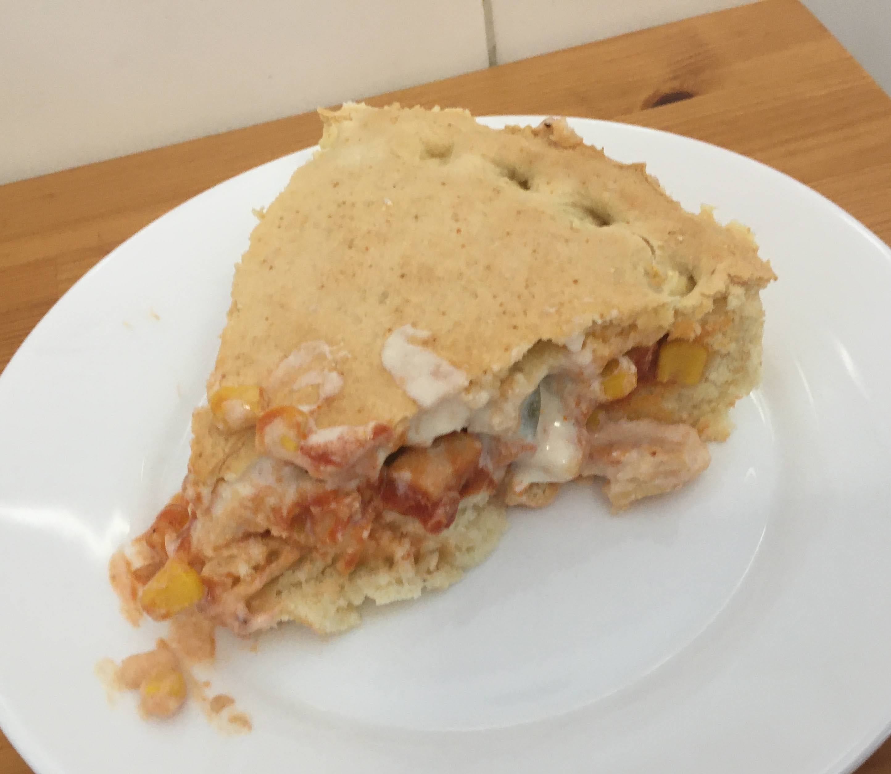

Massa de torta com iogurte

Ingredientes
- 2 xícaras (chá) de amido de milho
- 6 xícaras de (chá) de farinha de trigo
- 2 colheres (chá) de sal
- 2 colheres (sopa) de fermento químico
- 4 colheres (sopa) de manteiga
- 2 ovos
- 500 ml de iogurte natural
- Água QB
Modo de preparo
- Misturar todos os ingredientes, menos a água.
- Acrescentar a água aos poucos para dar o ponto, se necessário.
- Abrir a massa numa fôrma, rechear a gosto e fechar.
- Assar a 200º C por 30 minutos.
Observação
Receita do livro "Dieta light com iogurte".